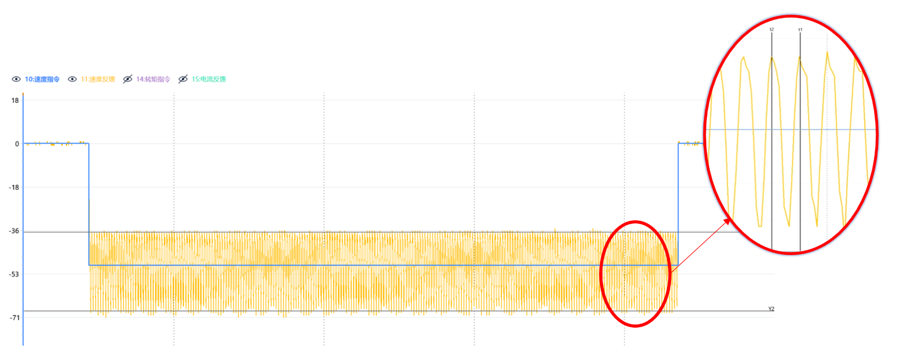
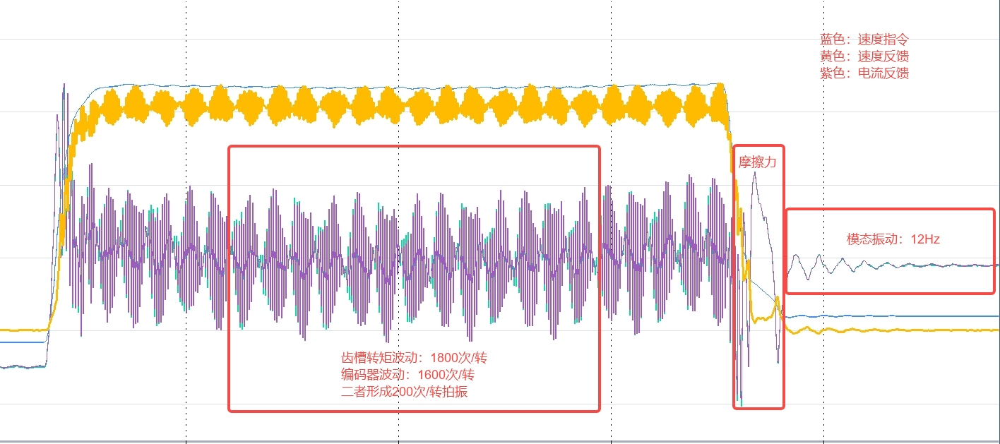
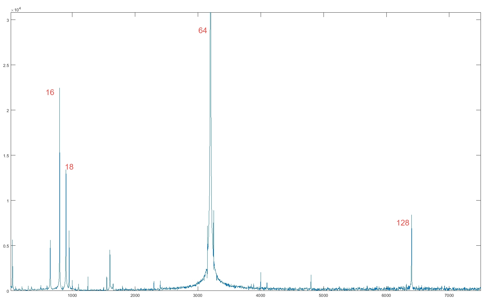

上肢150W电机齿槽转矩波动
1. 旋转顿挫感
断使能时，徒手转动电机轴，明显感觉到一圈18次（齿槽数）顿挫感。
电机转动时，明显观察到转动不顺畅。补偿对齿槽波动有一定效果，但不能完全消除：
齿槽转矩波动补偿过程视频
电机一致性较差，对于齿槽转矩力较大的电机，补偿效果不佳。
2. 低速运行转速波动大，高速运行电机异响
- 伺服15级刚性下，50rpm速度指令，速度波动约36%（±18rpm），频率为18倍频（转速的18倍）：

齿槽转矩波15rpm速度波动
- 高速转动时，电机产生与转速相关的噪声，速度越大频率越高。
1000rpm与3000rpm模组噪声（100倍减速比）
3. 影响编码器校准，耦合编码器波动
- 与编码器16倍频波动耦合，产生低频波动：

机器人关节模组齿槽转矩与编码器波动引起低频拍振（100倍减速比）
- 编码器自校准振动，干扰校准结果：
部分电机编码器校准后出现较大的64倍频波动。
下图中16倍频为编码器刻线波动，18倍频为齿槽转矩波动，64和128倍频由编码器自校准干扰产生。

模组电流反馈FFT图
4. 低增益力控扰动
阻抗控制为了达到柔顺效果，需要使用较低增益。在伺服增益较低时，抗扰能力很差，因此对电机各种波动要求很高。
一个比较常见的现象是：在关节定位完成后，电机依然会在两个齿槽平衡点间来回反复运动。